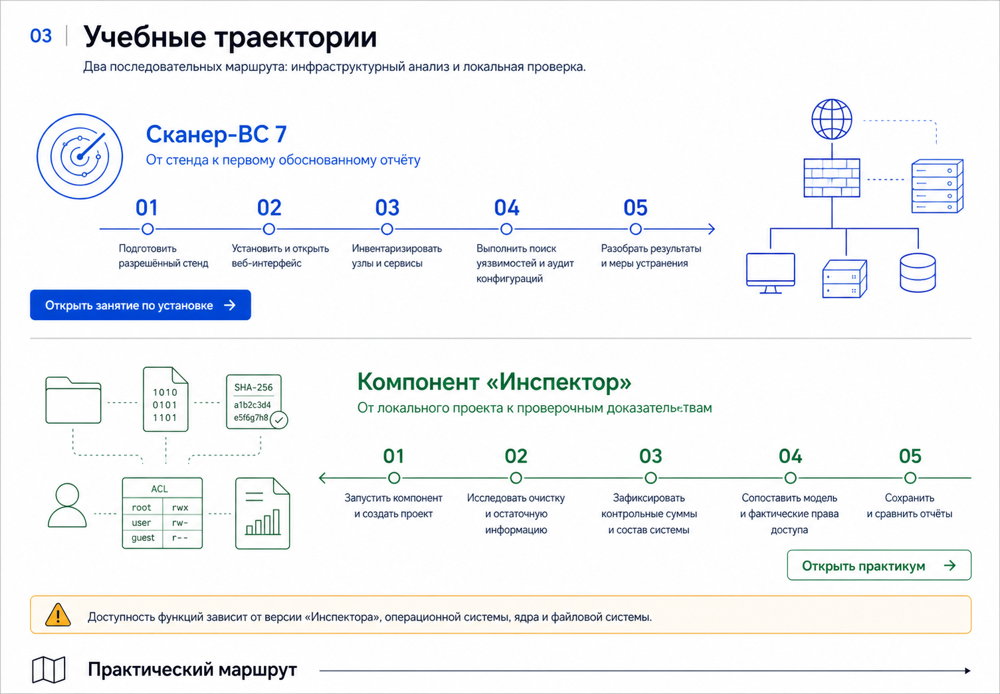

Язык уязвимостей
CWE, CVE и CPE; причины, проявления и идентификаторы.
Утром — большая лекция о языке уязвимостей, приоритизации и классах решений. Затем четыре практических блока: установить, обнаружить, подключить, проанализировать и защитить вывод.

Лекция строится от понятия слабости до управляемого процесса: что найдено, насколько серьёзно, эксплуатируется ли сейчас, где находится актив и что делать первым.
CWE, CVE и CPE; причины, проявления и идентификаторы.
CVSS v4.0, CISA KEV и EPSS как разные, не взаимозаменяемые сигналы.
Локальная проверка, VA/Compliance, VM, Exposure Management и endpoint-native VM.
Авторизация, область работ, обнаружение, подтверждение и фиксация результата.
Пять типов задач и рекомендуемая последовательность их запуска.
Актив → экспозиция → свидетельство → приоритет → действие → повторная проверка.
Одна таблица не заменяет модель угроз. Идентификаторы помогают связать данные, но отвечают на разные вопросы.
| Система | Что идентифицирует | Учебный вопрос | Пример применения |
|---|---|---|---|
| CWE | Класс слабости проектирования или реализации | Какой тип ошибки допустили? | CWE-787: запись за границами буфера |
| CVE | Публично известную уязвимость в конкретном контексте | Какая запись описывает проблему? | Связать бюллетень, оценки и исправление |
| CPE | Нормализованное наименование продукта и версии | К какому продукту относится запись? | Сопоставить инвентаризацию с источником уязвимостей |
Ошибка архитектуры или проектирования, дефект реализации, небезопасная конфигурация, уязвимая зависимость, слабые либо скомпрометированные учётные данные.
ОС, сетевой сервис, веб-приложение, СУБД, встроенное ПО, контейнер, библиотека или средство администрирования.
Локально, из смежной сети или удалённо; с участием пользователя или без него; до либо после получения привилегий.
Конфиденциальность, целостность и доступность, а также подлинность, подотчётность и возможность дальнейшего перемещения по инфраструктуре.
Теоретическая применимость, наличие публичного PoC, наблюдаемая эксплуатация, исправление производителя и фактическое состояние целевого актива.
Экспозиция, ценность данных и сервиса, защитные меры, связность с другими системами, допустимый простой и требования к устранению.
Их различают по происхождению, компоненту, вектору атаки, требуемым правам, влиянию на конфиденциальность, целостность и доступность, наличию эксплуатации и критичности затронутого актива. CVE и записи БДУ ФСТЭК России помогают связать сведения о конкретной уязвимости, а CWE — понять класс первопричины. Один идентификатор или балл не описывает весь риск.
Правильный приоритет появляется только при совместном рассмотрении технической серьёзности, фактов эксплуатации, прогноза, экспозиции и бизнес-контекста.
Характеризует серьёзность уязвимости через группы Base, Threat, Environmental и Supplemental. Оценка 0–10 не является вероятностью атаки и не равна полному риску организации.
KEV означает подтверждённую эксплуатацию в реальных атаках. EPSS оценивает вероятность наблюдаемой эксплуатации CVE в ближайшие 30 дней и обновляется ежедневно.
Приоритет = факт/вероятность эксплуатации + техническая серьёзность + внешняя доступность + критичность актива + компенсирующие меры + последствия + стоимость и срочность исправления. Складывать CVSS и EPSS арифметически нельзя.
Локальный обзор от 14.11.2024 используется только как исторический снимок методики и набора продуктов. Текущие функции и статусы проверяются по официальным страницам на дату занятия.
| Класс | Главный результат | Российские примеры для обзора | Международные ориентиры |
|---|---|---|---|
| Локальный точечный анализ | Проверка установленного ПО одного хоста | ScanOVAL | — |
| VA / Compliance | Сетевое и системное сканирование, конфигурационный аудит | Сканер-ВС 7, MaxPatrol 8, RedCheck | Nessus, Greenbone/OpenVAS |
| Полный VM-цикл | Активы → приоритет → задача → контроль устранения | MaxPatrol VM, R-Vision VM | Qualys VMDR, Rapid7 InsightVM |
| Exposure / оркестрация | Объединение источников, бизнес-контекст, SLA и автоматизация | Security Vision VM, ScanFactory VM | Tenable One VM |
| Endpoint-native VM | Непрерывная оценка через endpoint-платформу | Рассматривается как отдельная архитектурная модель | Microsoft Defender VM |
Таблица — учебная классификация пересекающихся функций, а не рейтинг и не закупочная рекомендация. Доступность лицензий, сертификация и поддержка конкретных платформ проверяются отдельно.
Для конкретной организации сопоставляют охват обнаружения и инвентаризации, глубину авторизованного анализа, источники уязвимостей и конфигурационных проверок, приоритизацию, жизненный цикл устранения, работу в изолированном контуре, API и интеграции, поддерживаемые платформы, сертификацию и сопровождение. Название класса само по себе не гарантирует наличие этих функций.
Рекомендуемая последовательность документации: исследование сети → инвентаризация → поиск уязвимостей и аудит конфигурации. Проверка паролей проводится отдельно и только на учебных реквизитах.
Официальное введение связывает функции Сканер-ВС с отдельными мерами защиты. Это карта функциональных возможностей, а не автоматическое подтверждение соответствия всей информационной системы.
ИАФ.1, ИАФ.3, ИАФ.4 и ИАФ.5: проверки, связанные с идентификацией и аутентификацией.
УПД.1, УПД.2, УПД.10 и УПД.11: отдельные проверки управления доступом и сетевого взаимодействия.
РСБ.3 и РСБ.6: функции, используемые при анализе регистрации и событий безопасности.
ОЦЛ.6 и ОЦЛ.7: контроль отдельных параметров целостности и конфигурации.
АНЗ.1, АНЗ.3 и АНЗ.4: выявление, анализ уязвимостей и контроль состава технических средств и ПО.
Отчёт фиксирует выбранные задачи в заданной области; полноту мер и соответствие системы обосновывает эксперт по совокупности доказательств.
Задать разрешённые цели и исключения, интенсивность и лимиты; определить доступные узлы, TCP/UDP-порты, версии сервисов, признаки ОС и топологию. Перед запуском зафиксировать область работ.
Для Windows основной маршрут занятия — WinRM с vendor-скриптом winrm.ps1; для Linux — SSH. Для полноты вендор указывает административные права и root, поэтому в лаборатории привилегированные реквизиты делают отдельными и временными. У одного актива должно быть одно корректное подключение.
Собрать программное обеспечение и версии, обновления, аппаратный состав и пользователей. Привилегии нужны для полноты результата; экспорт SPDX/CycloneDX затем отдельно валидируется.
Сопоставить инвентаризацию с выбранным источником, проверить версию, применимость и возможные ложные срабатывания. Режим БДУ рассматривается как отдельный эксперимент: документация содержит оговорку об игнорировании других штатных источников, поэтому поведение проверяют на фактической сборке.
Использовать малый словарь, синтетические учётные записи, фиксированные цели и остановку после первого результата. Отчёт может содержать пароль открытым текстом — удалить его и сменить реквизиты после занятия.
Выбрать подходящий шаблон Best Practice, сравнить фактические настройки с требованиями и отделить небезопасную конфигурацию от уязвимости версии ПО.
Зафиксировать параметры задачи, версию базы, время и область проверки; проверить критичные результаты вручную, назначить действия и повторить проверку после исправления.
Удобство лаборатории не должно превращаться в постоянное ослабление. Реквизиты — отдельные, права — минимально достаточные, доступ — только от адреса сканера и только на время занятия.
Официальная документация предлагает winrm.ps1 из /var/lib/echelon/0/scanner/scripts либо со страницы https://<IP-сканера>/winrm/. До запуска преподаватель проверяет исходный текст и хеш. Для полной проверки вендор указывает административные права; в лаборатории это отдельная временная запись, HTTPS WinRM на 5986 и правило брандмауэра только для IP сканера.
Это vendor-команда, а не универсальная рекомендация менять политику PowerShell. Для удаления созданной конфигурации в поставке предусмотрен remove.ps1; Disable-PSRemoting не является точечной отменой и отключает PowerShell Remoting целиком.
Документация для полной инвентаризации и аудита указывает привилегии root. В учебном стенде создаётся отдельная временная запись с ключом RSA/ECDSA/ED25519 либо временным паролем и строго ограниченным сроком жизни; объём привилегий и отклонения от требований вендора фиксируются в отчёте.
authorized_keysStrictModes no в Linux и productionВсе действия выполняются только на собственных или письменно разрешённых учебных системах. Диапазоны, время, методы, учётные записи, пороги блокировки и ответственный за остановку фиксируются до начала работы.
Обязательные команды перенесены из предоставленной учебной инструкции, страницы 3-5, и сверены с текущей официальной документацией Сканер-ВС 7.x. Переносы строк из PDF нормализованы в исполнимые однострочные команды.
Имена файлов в конкретной выдаче могут отличаться. В предоставленной инструкции используется scanner-signed-deb.run, а в текущей документации - условное scanner.run. Подставляйте точное имя файла из письма производителя; лицензию не передавайте другим слушателям.
Запустите PowerShell от имени администратора. Приглашение PS C:\> вводить не нужно. После включения WSL может потребоваться перезагрузка.
wsl --install wsl --install Ubuntu wsl -d Ubuntu wsl --list --verbose
Если имя дистрибутива отличается от Ubuntu, используйте имя из списка. Текущая документация также рекомендует выполнить wsl --version и убедиться, что дистрибутив работает как WSL 2.
Скопируйте выданные файлы в Ubuntu через \\wsl$\. Лицензия должна попасть в созданный каталог pkg до запуска installer.
sh scanner-signed-deb.run cp license.lic pkg/ cd pkg/ ./installer install
Для нативной Astra Linux/Debian в PDF строка сокращена до sudo bash scanner.... Многоточие не является частью команды: подставьте полное имя свежего .run-файла. Каждый запрос установщика нужно читать, а не подтверждать вслепую.
Для работы только на самом Windows-компьютере используйте https://localhost и не создавайте сетевые правила. Для доступа из разрешённой лабораторной сети замените заполнители фактическими адресами.
netsh interface portproxy add v4tov4 listenport=443 listenaddress=<IP_Хоста> connectport=443 connectaddress=<IP_WSL>
New-NetFirewallRule -DisplayName "Allow Scanner UI" -Direction Inbound -Protocol TCP -LocalPort 443 -Action Allow
Правило из PDF не ограничивает удалённые адреса. В учебной сети добавьте -RemoteAddress <ЛАБОРАТОРНАЯ_ПОДСЕТЬ_CIDR> -Profile Private. Не отключайте брандмауэры целиком и не публикуйте HTTP-порт 80.
Текущая документация добавляет проверку службы systemctl status scanner; ожидается active (running). После первого входа немедленно смените первоначальный пароль.
netsh interface portproxy show all Get-NetFirewallRule -DisplayName "Allow Scanner UI"
После занятия удаляйте только созданное правило и конкретное перенаправление. Общий netsh interface portproxy reset не используют: он затронет чужие правила.
Каждый блок длится 90 минут и заканчивается артефактом, который нужен для следующего шага. После первого блока — обед; между остальными — короткие перерывы.
Заполните официальную форму демоверсии. Производитель вышлет на указанную почту ссылку на актуальную демоверсию Сканер-ВС 7 Base и файл лицензии. На 05.08.2026 форма сообщает о лицензии на 4 IP до 30.09.2026 и сборках для Astra Linux, Windows 10/11 через WSL, Альт СП и РЕД ОС; это изменяемые условия, поэтому их проверяют перед каждым потоком. Включение «Инспектора» не предполагается без отдельного подтверждения производителя.
На дату проверки продукта Base содержит штатные шаблоны аудита, но создание, редактирование и импорт собственных шаблонов относится к Enterprise. Практика на демоверсии строится только на реально доступном шаблоне; число шаблонов и состав редакций сверяются перед занятием.
Официальная базовая конфигурация указывает 4 процессорных ядра, 8 Гбайт ОЗУ и SSD 100 Гбайт. Документированы варианты для поддерживаемых Linux-дистрибутивов, WSL 2 и контейнерного развёртывания; перед установкой сверяются именно актуальная инструкция для выбранной ОС, первый вход, смена первоначального пароля и загрузка выданной лицензии.
Четыре практических блока, адаптированные с полезной последовательности методички версии 6 к задачам Сканер-ВС 7.x.
Внутри находятся офлайн-лендинг и материалы `.md`: общий сценарий, ScanOVAL, WSL 2, VirtualBox, Live USB и отчет. Полностью распакуйте ZIP и откройте `index.html`.
Убедиться, что слушатель получил демоверсию Сканер-ВС 7 Base и файл лицензии через официальную форму; затем выбрать вариант: ScanOVAL, WSL 2, VirtualBox или Live USB. Проверить источник, контрольные суммы (если опубликованы), условия лицензии, снимок ВМ и отсутствие мостового подключения. Артефакт: паспорт стенда.
Создать проект и задачу исследования сети, сверить найденные активы, подготовить Windows через WinRM и Linux через SSH. Артефакт: карта активов и журнал подключений.
Собрать ПО и аппаратный состав, запустить задачу поиска, выбрать несколько результатов и проверить версии, CVE/БДУ, CVSS, KEV/EPSS и применимость. Артефакт: реестр проверенных находок.
Провести контролируемую проверку синтетической учётной записи, запустить аудит конфигурации по подходящему шаблону, сформировать отчёт и план повторной проверки. Артефакт: защищаемый вывод.

Локальная проверка поддерживаемой Windows. Это не сетевой сканер и не VM-система. Windows 11 официальная страница сейчас не перечисляет — совместимость проверяется заранее. Дистрибутив не включается в курс.
Поддержаны Windows 10/11 и WSL 2. Сразу сменить стандартный пароль, не публиковать HTTP и ограничить 443 лабораторной подсетью.
Astra Linux со сканером, Metasploitable 2 и учебная Windows размещаются в Host-only/Internal Network. Снимок создаётся до изменения конфигурации.
Вендор документирует носитель от 32 ГБ. Без Persistence результаты исчезают после перезагрузки; с Persistence носитель содержит чувствительные данные и требует защиты.
Проверено по официальным материалам 05.08.2026. Перед проведением курса преподаватель повторно сверяет версии, условия демолицензии и доступность образов.
Нельзя обещать обнаружение всех уязвимостей, отсутствие ложных срабатываний, одновременное объединение всех баз, наличие CVSS v4-вектора в конкретной сборке или включение «Инспектора» в демолицензию без проверки фактического стенда. Введение указывает сертификат ФСТЭК России № 2204, 4-й уровень доверия, срок действия до 13.11.2029; сертификат продукта не доказывает соответствие проверяемой системы.